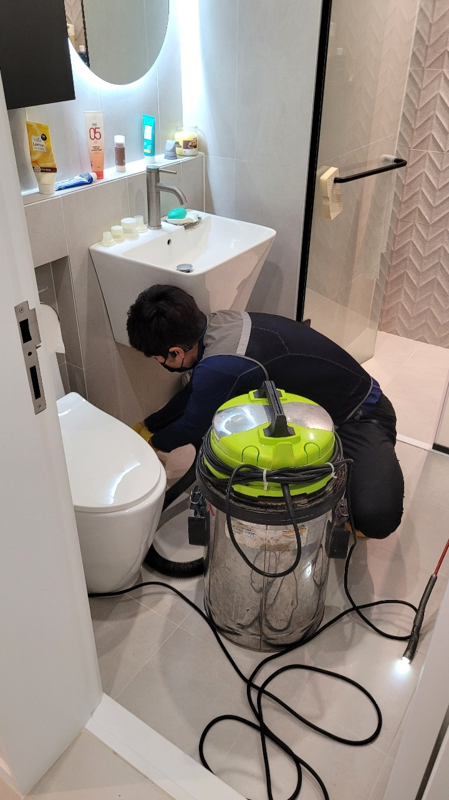
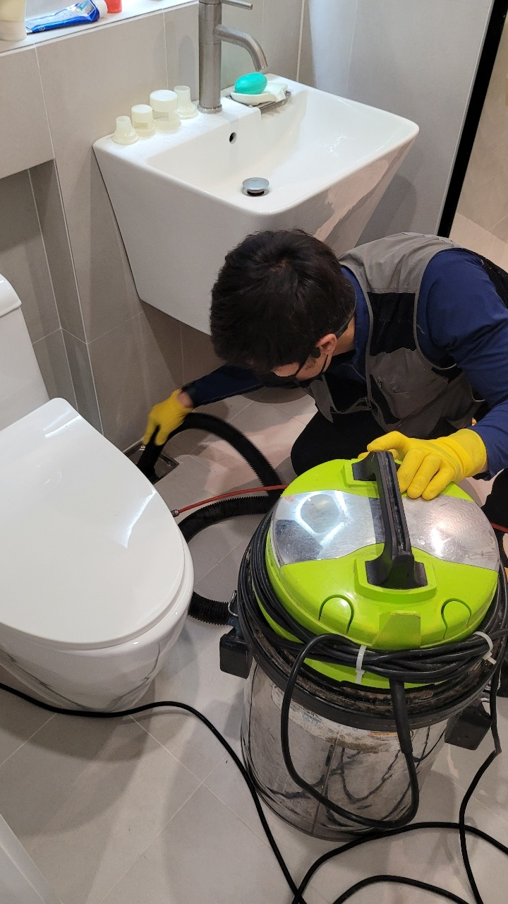
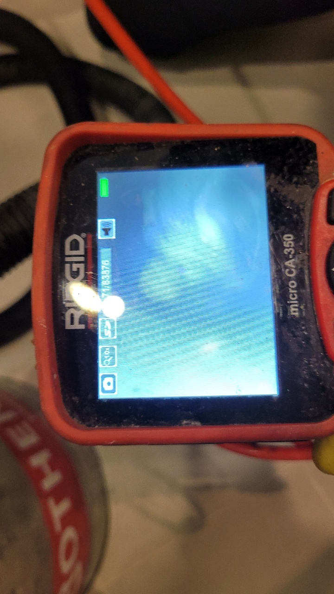

🏠 용인시 처인구 맨홀공사 깨진곳 보수작업 하는곳 업체
용인 처인구 하수구막힘 전문 시공 후기

📋 작업 개요
- 위치: 용인 처인구, 처인구, 용인
- 서비스 유형: 하수구막힘, 배관막힘, 맨홀막힘, 뚫는업체, 배관청소, 고압세척, 설비공사, 배관보수, 악취차단
- 작업 일시: 2025. 6. 28. 17:33
- 업체명: 하수구수사대 (010-5615-2118)
🔍 문제 상황
안녕하세요. 하수구수사대입니다.
욕실과 같은 경우 물의 사용이 주된 목적으로 만들어진 공간이기 때문에 하수구 관련 문제가 많이 발생하곤 합니다. 평소에 깨끗하게 청소를 하고 이물질 제거를 해도 사용량이 많은 만큼 막힘 현상을 피하기는 어려운데요. 오늘은 하수구수사대가 해결을 위해 다녀온 처인구 전원주택 욕실하수구막힘 완벽하게 해결하고 돌아온 후기를 전해드리겠습니다.
모든 해결을 위해서는 원인 파악이 기본이죠?
먼저 의뢰가 들어오면 원활한 의사소통으로 일정 조율 및 상황 파악을 진행합니다. 화장실의 막힘 같은 경우 원인은 매우 다양하지만 대표적으로는 물과 이물질이 쌓이는 현상 때문입니다.
많은 분들이 이러한 현상을 예방하기 위해 배수구 거름망을 설치하고 계시는데요. 거름망과 같은 경우 물론 어느 정도의 이물질을 걸러내고 막아줄 순 있지만 배수구 내부로 유입되는 것을 완벽하고 철저하게 차단하는 것은 불가능합니다.

🔎 원인 분석
💡 전문가 진단: 모든 해결을 위해서는 원인 파악이 기본이죠?
빠른 해결 작업
이번에 처인구 전원주택 욕실하수구막힘 완벽하게 해결 작업을 원하셨던 곳의 의뢰인분 또한 거름망을 설치해두셨지만 그럼에도 불구하고 하수구가 막혀 도움을 요청하셨습니다. 먼저 원인 파악을 위해 내시경 카메라를 통해 하수구 배관 안을 살펴보았습니다.
이때 먼저 바닥에 고여있는 물을 제거하는 과정의 순서를 거쳐야 합니다. 물이 바닥 위까지 차올라 있다면 배수구 안의 상태를 확실하게 체크하기 어렵기에 물을 모두 제거하고 내시경 카메라 호스를 하수구 배관 내부에 넣어 확인해 본 결과 온갖 이물질과 머리카락이 쌓여 배관을 막고 있는 것이 확인되었죠.
경기도 용인시 처인구 중부대로1313번길 20-25 2층 202호 나21
이 상태로 오래 방치가 된다면 이물질은 배관 벽면에

🔧 작업 과정
더욱 강하게 흡착되고 부식까지 진행되기에 악취가 동반되기도 합니다.
욕실 배수구와 같은 곳은 평소에 샤워를 하며 발생하는 머리카락 또는 각질 등의 이물질로 인해 막힘이 다른 곳보다 비교적 쉽게 발생되는 곳입니다.
그렇기에 내부에 있는 덩어리들을 먼저 제거하는 작업이 필요하죠. 석션기를 사용해 크기가 큰 이물질들을 먼저 제거해내는 작업을 진행했습니다. 이후 고압세척을 통해 작은 찌꺼기까지 꼼꼼하게 제거가 되어야 하는데요.
처인구 전원주택 욕실하수구막힘 완벽하게 해결 작업을 위해 현장에 다녀온 저희 하수구 수사대는 고압세척을 진행할 경우 배관에 무리나 스크래치가 생겨 2차 문제가 발생하지 않도록 현장마다 해당 배관 사이즈와 배수구 규격 등을 미리 파악하고 그에 맞는 맞춤형으로 기계를 사용해 작업을 진행하고 있습니다. 이물질들이 조금씩 오랜 시간 쌓이다 보면 점점 굳어버리게 되고 그로 인해 더욱 단단한 덩어리로 변화하게 됩니다. 그러면서 점차 배관이 막히게 되는거죠.
전문가의 도움이 필요한 이유
하수구 막힘이 발생됐을 때 많은 분들께서 셀프로 해결을 시도하려고 하실 겁니다. 물론 아주 간단한 막힘 정도는 뚫릴 수 있지만 대부분 오랫동안 방치된 이물질들이 쌓여 문제가 발생하는 것이기에 약품 등을 이용한 셀프 방식으로는 해결이 어렵습니다.
오히려 배관에 손상이 생겨 교체를 해야 하는 불상사까지 일어날 수 있습니다. 이럴 경우 더 많은 비용과 시간이 필요하기 때문에 전문가의 도움을 받아 신속 정확한 해결을 하시는 것을 권장 드리고 있습니다.
저희 하수구수사대는 10년 넘은 경험과 노하우를 보유하고 있는 전문가들이 직접 현장에 방문합니다.


✅ 작업 완료
문제 해결을 진행하고 합리적인 견적 안내까지 이루어지고 있어 고객 만족도가 굉장히 높은 업체라고 자신할 수 있습니다. 고가의 최신식 장비도 고루 갖추고 있어 어떠한 상황과 장소여도 완벽한 하수구 뚫기 작업이 가능한데요. 모든 작업이 이루어진 이후에 발생하는 이물질이나 쓰레기,등은 직접 청소하고 뒷정리를 하여 완벽한 마무리까지 진행해 드리고 있는 하수구수사대입니다.
보다 빠르고 정확한 처인구 전원주택 욕실하수구막힘 완벽하게 해결 작업을 원하신다면 하단에 위치한 번호로 연락 주셔서 전문가와의 상담을 통해 현명한 선택하실 수 있기를 바라겠습니다. 요즘 날씨가 많이 추워졌으니 모두들 감기 조심하시고 오늘도 좋은 하루 보내시기 바랍니다.




⚠️ 하수구 배관 막힘 예방 및 관리 가이드
- ✅ 머리카락, 비닐, 물티슈 등 물에 분해되지 않는 이물질은 하수구 유입을 절대 금지해 주세요.
- ✅ 하수구 거름망을 씌우고 모여진 이물질은 주기적으로 쓰레기통에 바로 비워주셔야 합니다.
- ✅ 배관 노후가 심할 경우 이물질이 더 쉽게 걸리므로 주기적인 배관 세척(고압세척 등)을 권장합니다.
- ✅ 작업 후 1년 이내 재발 시 하수구수사대에서 무상 A/S 보증 서비스를 제공합니다.
💡 핵심 정리
- 확실한 장비 작업(내시경 점검 및 샤프트 스케일링)으로 원인을 뿌리 뽑습니다.
- 작업 후 1년 이내에 동일한 부위 재발 시 100% 무상 A/S 서비스를 보장합니다.
- 서울 · 경기 · 인천 전 지역에 24시간 언제든 긴급 출동할 수 있도록 항시 대기 중입니다.
❓ 자주 묻는 질문 (FAQ)
🚨 용인 처인구 하수구막힘 문제로 고민이신가요?
정확한 원인 진단과 확실한 시공으로 재발 없는 해결을 약속드립니다.
24시간 긴급 출동 | 서울 · 경기 · 인천 전지역 | 1년 내 재발 시 무상 A/S